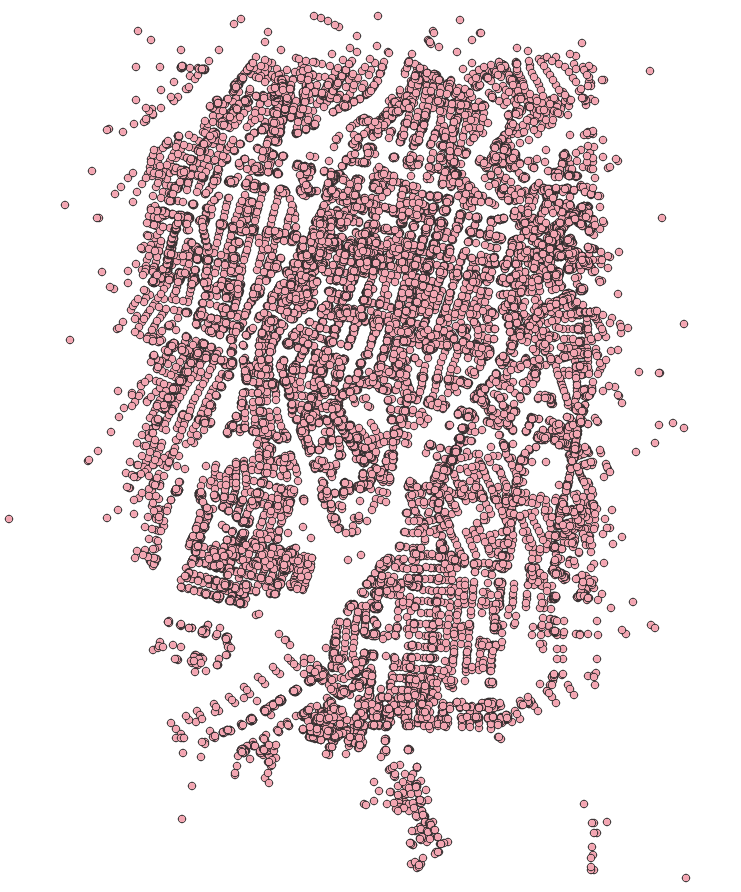

2. Graphs¶

Different applications require different graphs. This chapter covers how to discard disconnected segments and different approaches to create graphs.
pgRouting functions in this chapter
2.1. The graph requirements¶
This chapter requires the creation of three distinct routing graphs derived from
ways. These consist of two vehicle-specific graphs and one pedestrian
graph, all of which utilize the standard source and target to determine
routing paths.
The description of the graphs:
Particular vehicle:
Circulate on the whole Hiroshima area.
Do not use pedestrian, steps, footway, path, cycleway
Speed is the default speed from OSM information.
Taxi vehicle:
Circulate on a smaller area:
Bounding box:
(132.439,34.38, 132.46,34.40)Do not use pedestrian, steps, footway, path, cycleway
Speed is 10% slower than that of the particular vehicles.
Pedestrians:
Walk on the whole Hiroshima area.
Can only use pedestrian-only ways:
pedestrian, steps, footway, path, cycleway, residential
The walking speed is
2 mts/sec.
2.2. Configuration from osm2pgrouting¶
When dealing with data, being aware of what kind of data is being used can improve results.
Vehicles cannot circulate on pedestrian ways

When converting data from OSM format using the osm2pgrouting tool, there is an
additional table: configuration.
The configuration table structure can be obtained with the following command.
\dS+ configuration
Table "public.configuration"
Column | Type | Collation | Nullable | Default | Storage | Compression | Stats target | Description
-------------------+------------------+-----------+----------+-------------------------------------------+----------+-------------+--------------+-------------
id | integer | | not null | nextval('configuration_id_seq'::regclass) | plain | | |
tag_id | integer | | | | plain | | |
tag_key | text | | | | extended | | |
tag_value | text | | | | extended | | |
priority | double precision | | | | plain | | |
maxspeed | double precision | | | | plain | | |
maxspeed_forward | double precision | | | | plain | | |
maxspeed_backward | double precision | | | | plain | | |
force | character(1) | | | | extended | | |
Indexes:
"configuration_pkey" PRIMARY KEY, btree (id)
"configuration_tag_id_key" UNIQUE CONSTRAINT, btree (tag_id)
Referenced by:
TABLE "ways" CONSTRAINT "ways_tag_id_fkey" FOREIGN KEY (tag_id) REFERENCES configuration(tag_id)
Access method: heap
Options: autovacuum_enabled=false
In the image above, there is a detail of the tag_id of the roads.
The OSM highway types:
SELECT tag_id, tag_key, tag_value
FROM configuration
ORDER BY tag_id;
tag_id | tag_key | tag_value
--------+-----------+-------------------
100 | highway | road
101 | highway | motorway
102 | highway | motorway_link
103 | highway | motorway_junction
104 | highway | trunk
105 | highway | trunk_link
106 | highway | primary
107 | highway | primary_link
108 | highway | secondary
109 | highway | tertiary
110 | highway | residential
111 | highway | living_street
112 | highway | service
113 | highway | track
114 | highway | pedestrian
115 | highway | services
116 | highway | bus_guideway
117 | highway | path
118 | highway | cycleway
119 | highway | footway
120 | highway | bridleway
121 | highway | byway
122 | highway | steps
123 | highway | unclassified
124 | highway | secondary_link
125 | highway | tertiary_link
201 | cycleway | lane
202 | cycleway | track
203 | cycleway | opposite_lane
204 | cycleway | opposite
301 | tracktype | grade1
302 | tracktype | grade2
303 | tracktype | grade3
304 | tracktype | grade4
305 | tracktype | grade5
401 | junction | roundabout
(36 rows)
Also, on the ways table, there is a column that can be used to JOIN with the configuration table.
The configuration types in the Hiroshima data
SELECT DISTINCT tag_id, tag_key, tag_value
FROM ways JOIN configuration USING (tag_id)
ORDER BY tag_id;
tag_id | tag_key | tag_value
--------+----------+---------------
101 | highway | motorway
102 | highway | motorway_link
104 | highway | trunk
105 | highway | trunk_link
106 | highway | primary
107 | highway | primary_link
108 | highway | secondary
109 | highway | tertiary
110 | highway | residential
112 | highway | service
113 | highway | track
114 | highway | pedestrian
117 | highway | path
118 | highway | cycleway
119 | highway | footway
122 | highway | steps
123 | highway | unclassified
125 | highway | tertiary_link
201 | cycleway | lane
202 | cycleway | track
(20 rows)
2.3. pgr_extractVertices¶
pgr_extractVertices extracting the vertex information of the set of edges of
a graph.
Signature summary
pgr_extractVertices(Edges SQL, [dryrun])
RETURNS SETOF (id, in_edges, out_edges, x, y, geom)
OR EMPTY SET
Description of the function can be found in pgr_extractVertices
2.3.1. Exercise 1: Create a vertices table¶
Problem
Create the vertices table corresponding to the edges in ways.
Solution
A graph consists of a set of vertices and a set of edges.
In this case, the
waystable is a set of edges.In order to make use of all the graph functions from pgRouting, it is required have the set of vertices defined.
From the requirements, a fully connected graph is needed, therefore adding a
componentcolumn.
SELECT id, in_edges, out_edges, x, y, NULL::BIGINT osm_id, NULL::BIGINT component, geom
INTO vertices
FROM pgr_extractVertices('SELECT id, source, target FROM ways ORDER BY id');
SELECT 22889
Reviewing the description of the vertices table
\dS+ vertices
Table "public.vertices"
Column | Type | Collation | Nullable | Default | Storage | Compression | Stats target | Description
-----------+------------------+-----------+----------+---------+----------+-------------+--------------+-------------
id | bigint | | | | plain | | |
in_edges | bigint[] | | | | extended | | |
out_edges | bigint[] | | | | extended | | |
x | double precision | | | | plain | | |
y | double precision | | | | plain | | |
osm_id | bigint | | | | plain | | |
component | bigint | | | | plain | | |
geom | geometry | | | | main | | |
Access method: heap
Inspecting the information on the vertices table
SELECT * FROM vertices Limit 10;
id | in_edges | out_edges | x | y | osm_id | component | geom
-------+---------------+---------------+---+---+--------+-----------+------
4617 | {6168,6169} | {502,6920} | | | | |
790 | {941} | {940,19347} | | | | |
7190 | {9445,9446} | {374,9442} | | | | |
7738 | {10121,10122} | {193,10120} | | | | |
5642 | {7526,7527} | {168,7529} | | | | |
7864 | {10275,10276} | {962,6670} | | | | |
8230 | {10718,10719} | {763,10721} | | | | |
51 | {51,24830} | {558,689,693} | | | | |
12099 | {15569,15570} | {342,15542} | | | | |
839 | {1009} | {144} | | | | |
(10 rows)
2.3.2. Exercise 2: Fill up other columns in the vertices table¶
Problem
Fill up geometry information on the vertices table.
Solution
Count the number of rows that need to be filled up.
SELECT count(*) FROM vertices WHERE geom IS NULL;
count
-------
22889
(1 row)
Update the geom and osm_id columns
The update based on the
sourcecolumn fromwaystable and theidcolumn of the vertices table.To update
geomcolumn, use the start point of the geometry on thewaystable.Use the
source_osmvalue to fill uposm_idcolumn.
WITH
get_data AS (
SELECT source, source_osm, ST_startPoint(geom) AS pt FROM ways
UNION ALL
SELECT target, target_osm, ST_endPoint(geom) FROM ways
)
UPDATE vertices SET
(geom, osm_id, x, y) = (ST_startPoint(pt), source_osm, st_x(pt), st_y(pt))
FROM get_data WHERE source = id;
Verification
UPDATE 22889
count
-------
0
(1 row)
2.3.3. Exercise 3: Use QGIS to view the work¶
QGIS is a powerfull tool
If you are using OSGeoLive, then you can find QGIS here:
Open it and add the Postgres credentials to access city_routing

Choose the vertices table and move it to the layers

You will see on the canvas something similar to:
{kind=link}

2.4. pgr_connectedComponents¶
pgr_connectedComponents compute the connected components of an undirected
graph using a Depth First Search approach. A connected component of an
undirected graph is a set of vertices that are all reachable from each other.
Signature summary
pgr_connectedComponents(edges_sql)
RETURNS SET OF (seq, component, node)
OR EMPTY SET
Description of the function can be found in pgr_connectedComponents
2.4.1. Exercise 4: Set components on edges and vertices tables¶
Problem
Get the information about the graph components.
Solution
Create additional columns on the edges tables.
ALTER TABLE ways ADD COLUMN component BIGINT;
ALTER TABLE
Use the pgr_connectedComponents to fill up the vertices table.
Use the results to store the component numbers on the vertices table.
UPDATE vertices AS v SET component = c.component
FROM (
SELECT seq, component, node
FROM pgr_connectedComponents('SELECT id, source, target, cost, reverse_cost FROM ways')
) AS c
WHERE v.id = c.node;
UPDATE 22889
{kind=link}
Note
This is not a QGIS workshop, so the details about how to display layers are not written in this workshop
Update the edges table with based on the component number of the vertex
UPDATE ways SET component = v.component
FROM (SELECT id, component FROM vertices) AS v
WHERE source = v.id;
UPDATE 32163

2.4.2. Exercise 5: Inspect the components¶
Problem
Answer the following questions:
How many components are in the vertices table?
How many components are in the edges table?
List the 10 components with more edges.
Get the component with the maximum number of edges.
Solution
1. How many components are in the vertices table?
Count the distinct components.
SELECT count(DISTINCT component) FROM vertices;
count
-------
51
(1 row)
2. How many components are in the edges table?
Count the distinct components.
SELECT count(DISTINCT component) FROM ways;
count
-------
51
(1 row)
3. List the 10 components with more edges.
Count number of rows grouped by component. (line 1)
Inverse order to display the top 10. (line 2)
SELECT component, count(*) FROM ways GROUP BY component
ORDER BY count DESC LIMIT 10;
component | count
-----------+-------
1 | 32014
1515 | 20
20757 | 18
14412 | 8
12888 | 8
14399 | 8
17828 | 8
4296 | 8
21656 | 7
2917 | 7
(10 rows)
4. Get the component with the maximum number of edges.
Use the query from last question to get the maximum count
Get the component that matches the maximum value.
WITH
all_components AS (SELECT component, count(*) FROM ways GROUP BY component),
max_component AS (SELECT max(count) FROM all_components)
SELECT component FROM all_components WHERE count = (SELECT max FROM max_component);
component
-----------
1
(1 row)
2.5. Preparing the graphs¶
2.5.1. Exercise 6: Creating a view for routing vehicles¶

Problem
Create a view with minimal amount of information for processing the particular vehicles.
Routing
costandreverse_costin terms of seconds for routing calculations.Exclude
pedestrian,steps,footway,path,cyclewaysegments.Data needed in the view for further processing.
idof the segment.sourceandtargetof the segment.nameThe name of the segment.lengthThe length in meters rename fromlength_m.geomThe geometry.tag_idThe kind of road.
Verify the number of edges was reduced.
Solution
Creating the view:
If you need to reconstruct the view, first drop it using the command on line 1.
Get the component with maximum number of edges.
Select the required columns. - The
costandreverse_costare in terms of seconds. - Thelength_mis renamed.JOINwith the configuration:Exclude
pedestrian,steps,footway,path,cycleway.
1-- DROP VIEW vehicle_net CASCADE;
2
3CREATE OR REPLACE VIEW vehicle_net AS
4
5WITH
6all_components AS (SELECT component, count(*) FROM ways GROUP BY component),
7max_component AS (SELECT max(count) FROM all_components),
8the_component AS (
9 SELECT component FROM all_components
10 WHERE count = (SELECT max FROM max_component))
11
12SELECT
13 w.id, source, target,
14 cost_s AS cost, reverse_cost_s AS reverse_cost,
15 name, length_m AS length, tag_id, geom AS geom
16FROM ways w JOIN the_component USING (component) JOIN configuration USING (tag_id)
17WHERE tag_value NOT IN ('pedestrian', 'steps','footway','path','cycleway');
CREATE VIEW
Verification
Count the rows on the original ways and on vehicle_net.
SELECT count(*) FROM ways;
SELECT count(*) FROM vehicle_net;
count
-------
32163
(1 row)
count
-------
13833
(1 row)
Get the description of the view
\dS+ vehicle_net
View "public.vehicle_net"
Column | Type | Collation | Nullable | Default | Storage | Description
--------------+---------------------------+-----------+----------+---------+----------+-------------
id | bigint | | | | plain |
source | bigint | | | | plain |
target | bigint | | | | plain |
cost | double precision | | | | plain |
reverse_cost | double precision | | | | plain |
name | text | | | | extended |
length | double precision | | | | plain |
tag_id | integer | | | | plain |
geom | geometry(LineString,4326) | | | | main |
View definition:
WITH all_components AS (
SELECT ways.component,
count(*) AS count
FROM ways
GROUP BY ways.component
), max_component AS (
SELECT max(all_components.count) AS max
FROM all_components
), the_component AS (
SELECT all_components.component
FROM all_components
WHERE all_components.count = (( SELECT max_component.max
FROM max_component))
)
SELECT w.id,
w.source,
w.target,
w.cost_s AS cost,
w.reverse_cost_s AS reverse_cost,
w.name,
w.length_m AS length,
w.tag_id,
w.geom
FROM ways w
JOIN the_component USING (component)
JOIN configuration USING (tag_id)
WHERE configuration.tag_value <> ALL (ARRAY['pedestrian'::text, 'steps'::text, 'footway'::text, 'path'::text, 'cycleway'::text]);
2.5.2. Exercise 7: Creating a materialized view for routing pedestrians¶

Problem
Create a materialized view with minimal amount of information for processing pedestrian routing.
Routing
costandreverse_costwill be in seconds for routing calculations.The walking speed is
2 mts/sec.
Include the pedestrian roads:
pedestrian,steps,footway,path,cyclewayandresidentialroads.Data needed in the view for further processing.
idof the segment.sourceandtargetof the segment.nameThe name of the segment.lengthThe length in meters rename fromlength_m.geomThe geometry.tag_idThe kind of road.
Verify the number of edges was reduced.
Solution
Creating the view:
If you need to reconstruct the view, first drop it using the command on line 1.
Get the component with maximum number of edges.
Select the required columns.
The
costandreverse_costare in terms of seconds with speed of2 mts/sec.The
length_mis renamed.
JOINwith the configuration:Include
residential,pedestrian,steps,footway,path,cycleway.
1-- DROP MATERIALIZED VIEW walk_net CASCADE;
2
3CREATE MATERIALIZED VIEW walk_net AS
4
5WITH
6all_components AS (SELECT component, count(*) FROM ways GROUP BY component),
7max_component AS (SELECT max(count) FROM all_components),
8the_component AS (
9 SELECT component FROM all_components
10 WHERE count = (SELECT max FROM max_component))
11
12SELECT
13 w.id, source, target,
14 length_m / 2.0 AS cost, length_m / 2.0 AS reverse_cost,
15 name, length_m AS length, geom
16FROM ways w JOIN the_component USING (component) JOIN configuration USING (tag_id)
17WHERE tag_value IN ('residential','pedestrian', 'steps','footway','path','cycleway');
SELECT 24174
Count the rows on the view walk_net.
SELECT count(*) FROM walk_net;
count
-------
24174
(1 row)
Get the description.
\dS+ walk_net
Materialized view "public.walk_net"
Column | Type | Collation | Nullable | Default | Storage | Compression | Stats target | Description
--------------+---------------------------+-----------+----------+---------+----------+-------------+--------------+-------------
id | bigint | | | | plain | | |
source | bigint | | | | plain | | |
target | bigint | | | | plain | | |
cost | double precision | | | | plain | | |
reverse_cost | double precision | | | | plain | | |
name | text | | | | extended | | |
length | double precision | | | | plain | | |
geom | geometry(LineString,4326) | | | | main | | |
View definition:
WITH all_components AS (
SELECT ways.component,
count(*) AS count
FROM ways
GROUP BY ways.component
), max_component AS (
SELECT max(all_components.count) AS max
FROM all_components
), the_component AS (
SELECT all_components.component
FROM all_components
WHERE all_components.count = (( SELECT max_component.max
FROM max_component))
)
SELECT w.id,
w.source,
w.target,
w.length_m / 2.0::double precision AS cost,
w.length_m / 2.0::double precision AS reverse_cost,
w.name,
w.length_m AS length,
w.geom
FROM ways w
JOIN the_component USING (component)
JOIN configuration USING (tag_id)
WHERE configuration.tag_value = ANY (ARRAY['residential'::text, 'pedestrian'::text, 'steps'::text, 'footway'::text, 'path'::text, 'cycleway'::text]);
Access method: heap
2.5.3. Exercise 8: Limiting the road network within an area¶
Problem
Create a view
taxi_netfor the taxi:The taxi can only circulate inside this Bounding Box:
(132.439,34.38, 132.46,34.40)The taxi speed is 10% slower than the particular vehicle.
Base the view on
vehicle_net
Verify the reduced number of road segments.
Solution
Creating the view:
Adjust the taxi’s
costandreverse_costto be 10% slower than of the particular vehicle.The graph for the taxi is a subset of the
vehicle_netgraph.Can only circulate inside the bounding box:
(132.439,34.38, 132.46,34.40).
-- DROP VIEW taxi_net;
CREATE OR REPLACE VIEW taxi_net AS
SELECT
id,
source, target,
cost * 1.10 AS cost, reverse_cost * 1.10 AS reverse_cost,
name, length, tag_id, geom
FROM vehicle_net
WHERE vehicle_net.geom && ST_MakeEnvelope(132.439,34.38, 132.46,34.40);
CREATE VIEW
Count the rows on taxi_net.
SELECT count(*) FROM taxi_net;
count
-------
2887
(1 row)
Get the description.
\dS+ taxi_net
View "public.taxi_net"
Column | Type | Collation | Nullable | Default | Storage | Description
--------------+---------------------------+-----------+----------+---------+----------+-------------
id | bigint | | | | plain |
source | bigint | | | | plain |
target | bigint | | | | plain |
cost | double precision | | | | plain |
reverse_cost | double precision | | | | plain |
name | text | | | | extended |
length | double precision | | | | plain |
tag_id | integer | | | | plain |
geom | geometry(LineString,4326) | | | | main |
View definition:
SELECT id,
source,
target,
cost * 1.10::double precision AS cost,
reverse_cost * 1.10::double precision AS reverse_cost,
name,
length,
tag_id,
geom
FROM vehicle_net
WHERE geom && st_makeenvelope(132.439::double precision, 34.38::double precision, 132.46::double precision, 34.40::double precision);
2.6. pgr_dijkstraCostMatrix¶
pgr_dijkstraCostMatrix Calculates a cost matrix using Dijkstra algorithm.
Signature summary
pgr_dijkstraCostMatrix(Edges SQL, start vids, [directed])
RETURNS SETOF (start_vid, end_vid, agg_cost)
OR EMPTY SET
Description of the function can be found in pgr_dijkstraCostMatrix
2.6.1. Exercise 9: Testing the views¶

Problem
Test the created views
In particular:
Get a traveling cost matrix in seconds from the all follwoing
idto all theid7508,4128,4632,2110and1688.the views to be tested are:
vehicle_nettaxi_netwalk_net
Solution
The locations are:
7508,4128,4632,2110and1688.Passed as an array to the function.
For vehicle_net:
vehicle_netis used.Selection of the columns with the corresponding names.
The view is prepared with the column names that pgRouting use.
There is no need to rename columns.
1SELECT start_vid, end_vid, agg_cost
2FROM pgr_dijkstraCostMatrix(
3 'SELECT * FROM vehicle_net',
4 ARRAY[7508, 4128, 4632, 2110, 1688]);
start_vid | end_vid | agg_cost
-----------+---------+--------------------
1688 | 2110 | 471.58941058573396
1688 | 4128 | 145.32105446646588
1688 | 4632 | 194.29049827463504
1688 | 7508 | 174.397569126339
2110 | 1688 | 472.9355119940073
2110 | 4128 | 523.5622332310817
2110 | 4632 | 418.1289839373456
2110 | 7508 | 452.0690222915526
4128 | 1688 | 131.35809090927174
4128 | 2110 | 501.87037392493926
4128 | 4632 | 129.51701556306938
4128 | 7508 | 93.94070340081566
4632 | 1688 | 192.90755480461337
4632 | 2110 | 420.68952429976497
4632 | 4128 | 124.5983137364605
4632 | 7508 | 33.94003835420694
7508 | 1688 | 173.01462565631726
7508 | 2110 | 453.985930672805
7508 | 4128 | 90.65827538225359
7508 | 4632 | 36.48159915882339
(20 rows)
For taxi_net:
Similar as the previous one but with
taxi_net.The results give the same route as with
vehicle_netbutcostis higher.Not all the locations are in the area, so not all are calculated.
1SELECT start_vid, end_vid, agg_cost
2FROM pgr_dijkstraCostMatrix(
3 'SELECT * FROM taxi_net',
4 ARRAY[7508, 4128, 4632, 2110, 1688]);
start_vid | end_vid | agg_cost
-----------+---------+--------------------
4128 | 4632 | 142.46871711937632
4128 | 7508 | 103.33477374089722
4632 | 4128 | 137.05814511010655
4632 | 7508 | 37.33404218962764
7508 | 4128 | 99.72410292047894
7508 | 4632 | 40.129759074705746
(6 rows)
For walk_net:
Similar as the previous ones but with
walk_net.
1SELECT start_vid, end_vid, agg_cost
2FROM pgr_dijkstraCostMatrix(
3 'SELECT * FROM walk_net',
4 ARRAY[7508, 4128, 4632, 2110, 1688]);
start_vid | end_vid | agg_cost
-----------+---------+--------------------
1688 | 4128 | 974.1134663922404
1688 | 4632 | 1513.416531919412
1688 | 7508 | 1349.901812330015
4128 | 1688 | 974.1134663922404
4128 | 4632 | 750.3093736062607
4128 | 7508 | 508.0350537526043
4632 | 1688 | 1513.4165319194121
4632 | 4128 | 750.309373606261
4632 | 7508 | 242.27431985365666
7508 | 1688 | 1349.901812330015
7508 | 4128 | 508.03505375260454
7508 | 4632 | 242.27431985365664
(12 rows)
2.6.2. Exercise 10: Visualize on QGIS the pgr_costMatrix result¶
Problem
Based on the query from Exercise 9: Testing the views, create a view to be able to use on QGIS. (like the one above)
The results when using
vehile_netis the example.The other results are left to the reader.
Solution
QGIS needs a unique identifier, the identifier will be the row number.
JOINwithverticestable to get the geometry of the points.Build a
LINESTRINGjoining the 2 points.The name of the line consists of the values of the result of the function.
1CREATE OR REPLACE VIEW vehicle_costmatrix AS
2SELECT
3row_number() over() AS id,
4ST_makeline(v1.geom, v2.geom) AS geom,
5'('||start_vid||', '||end_vid||') t= ' || round(agg_cost::NUMERIC, 2) AS name
6FROM pgr_dijkstraCostMatrix(
7 'SELECT * FROM vehicle_net',
8 ARRAY[7508, 4128, 4632, 2110, 1688])
9JOIN vertices v1 ON (start_vid=v1.id)
10JOIN vertices v2 ON (end_vid=v2.id);
Enter QGIS, refresh the database and move the view to the layers. Format adding the name to the lines.